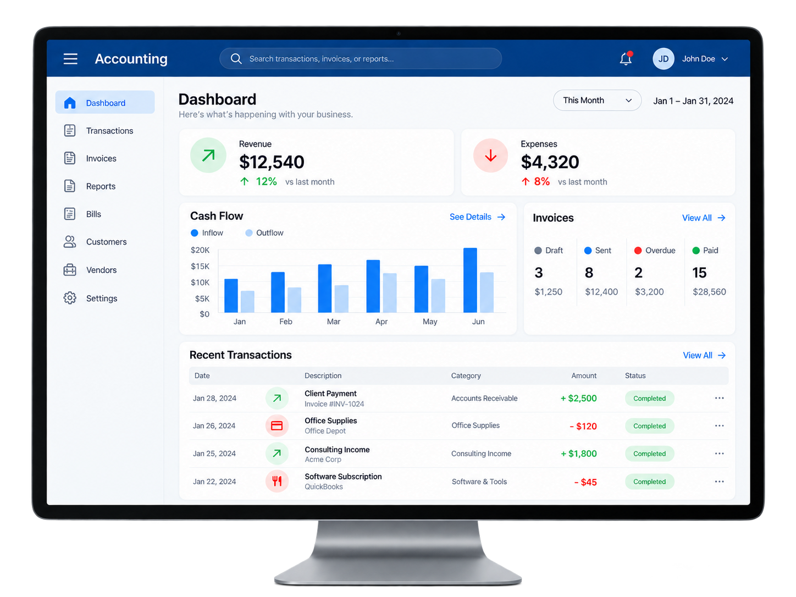
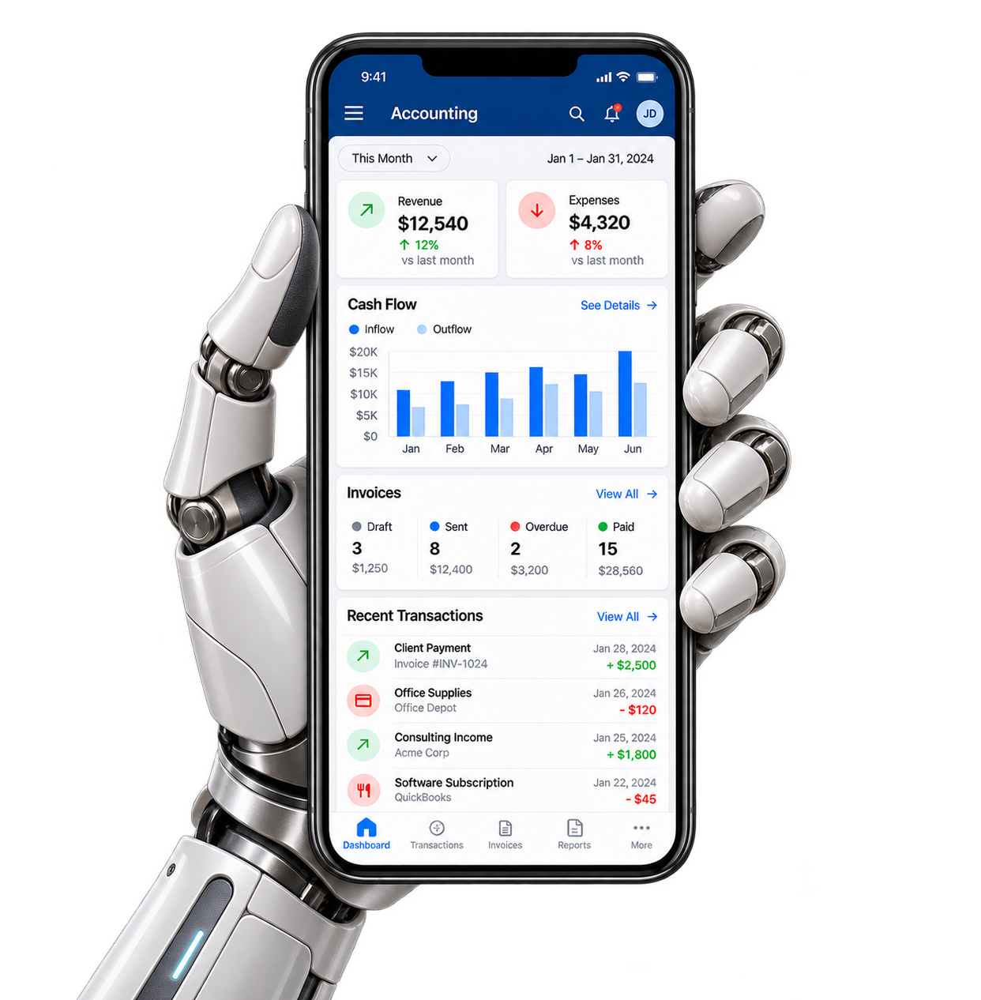

Context comes standard
Transactions find their place in an account structure that understands what your business actually does.
Your industry has its own language.
Finally, accounting software that speaks it.

YOUR BUSINESS, AT A GLANCE
Project margins, retainers, and billable time. Already in place.
A creative studio doesn’t run like a construction firm. So why should their books look the same?
Cübidek’s Adaptive Ledger shapes your accounts, workflows, and reporting around your industry. As your business changes, your accounting moves with it.
Find your industry +Transactions find their place in an account structure that understands what your business actually does.
See project margins, stock costs, or recurring revenue. Your dashboard brings the numbers that matter into focus.
Add a revenue stream or enter a new market. Cübidek suggests the accounts and workflows to support your next move.
| Project | Revenue | Margin |
|---|---|---|
| Brand identity | $42,500 | 38.4% |
| Digital experience | $56,200 | 31.8% |
| Strategy retainer | $29,750 | 28.6% |
Your retainer income is recognized monthly, with project costs matched to each engagement.
Illustrative workspace · sample data
From your first data import to your hundredth month-end close, a Cübidek support specialist is ready to help you use the platform with confidence.
A dedicated onboarding specialist helps map your accounts, move your data, and configure Cübidek around your industry.
GUIDED MIGRATIONReach a real product specialist any time through live chat, email, or a scheduled screen-share session.
24/7 PRODUCT HELPWhen a workflow or report needs a second look, our accounting support team can walk through it with you.
CLOSE & REPORTING SUPPORTCapture receipts, approve transactions, and check cash flow wherever the day takes you.

Run close, reporting, and planning in a secure workspace designed for sustained focus.
A LITTLE MORE CLARITY
The Adaptive Ledger uses your business model and transaction patterns to recommend an industry-specific account structure, workflows, and reports. Your team reviews the recommendations and stays in control of the books.
Your workspace can combine operating models. A retailer with a subscription business, for example, can track inventory and recurring revenue in one ledger, with a distinct view of each.
Cübidek is designed to give your accountant better context and less repetitive setup. Judgment, review, and final approval stay with the people who know your business.
Every proposed adjustment includes the pattern behind it and the accounts or reports it would affect. You can review, accept, or leave your existing setup in place.
A BETTER FIT FOR WHAT’S NEXT